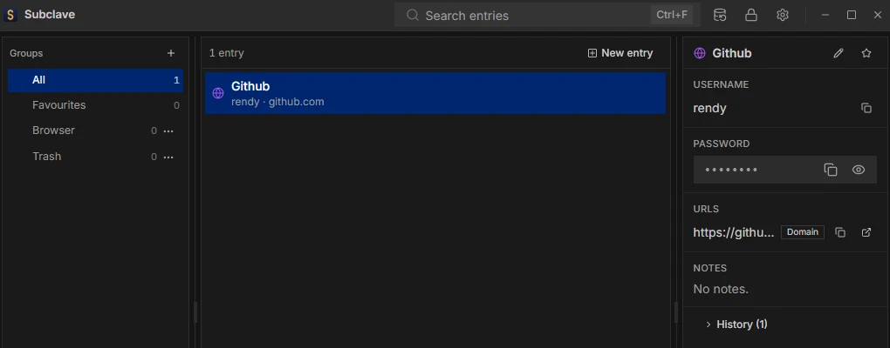
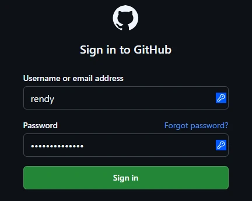

macOS 10.15+
Builds are not code-signed. Drag Subclave to Applications, then run once:
xattr -cr /Applications/Subclave.appSubclave is a desktop password manager with no account and no server of its own. The vault is one encrypted file on this machine. Sync it through an S3 bucket or WebDAV share you own, and fill logins in Chrome and Firefox with an extension that talks only to the app.
Free and open source, Apache-2.0.
Kept in one encrypted file on this computer.
Logins, one-time codes and notes, in one file only you can open.

Passed over a local socket, never the network.
Fill from the login field, the toolbar or a shortcut. Nothing fills on its own.

Leaves this computer as ciphertext.
Sync through storage you already have. It holds your vault and cannot read it.
$ rclone ls nas:subclave/v1
298 keyfile
911 obj/f80aaa97db1874ee1f0e02d0fd72a744a18d151eb1acb041e2bc63f503e83baa
1204 obj/6cfe7cfe3c8fc80ef1257378f249477d729de9ad4f249cf126a3c17d47169217
877 obj/057719533092efa268dc8fa81203f889c505b3f9ed629227e7cc4efb824e89ecWritten only where you choose.
Bring your logins from KeePassXC, Bitwarden, Chrome or Firefox.
.subclave-backup sealed with a passphrase (Argon2id and AES-256-GCM). Subclave
refuses a weak one. Restoring a backup merges it into the vault and never deletes anything.
What Subclave protects against, and what it does not.
.bak or a backup. They can only guess the
password, and Argon2id makes every guess slow.
.bak, which still opens with the master password of its day.Details in the security policy and the known limits.
The latest release for macOS, Linux and Windows.
Subclave checks for signed updates every 6 hours and installs only when you say so.
Builds are not code-signed. Drag Subclave to Applications, then run once:
xattr -cr /Applications/Subclave.appThe AppImage needs FUSE, or run it with --appimage-extract-and-run.
Per-user installer, not code-signed. SmartScreen warns when you run the installer: click More info, then Run anyway.
Not in the Chrome Web Store or signed by Mozilla yet, so you load it by hand and it does not update itself.
chrome://extensions, turn on Developer mode
and click Load unpacked. Firefox: open about:debugging#/runtime/this-firefox and click Load Temporary
Add-on, which lasts until Firefox restarts.
Firefox ESR, Developer Edition and Nightly can keep it installed: full install steps.